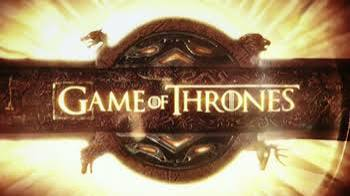
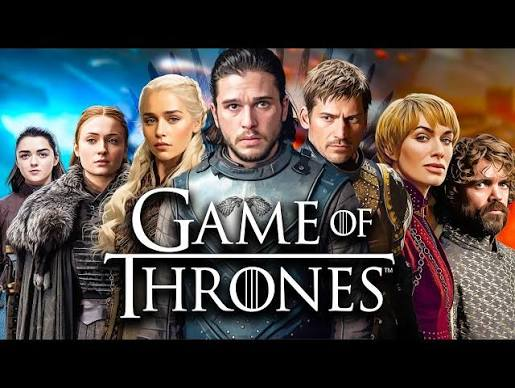

Game of Thrones Overview
Game of Thrones is a fantasy television series created by David Benioff and D.B. Weiss. The series is based on the book series A Song of Ice and Fire by George R.R. Martin. The show is set in the fictional continents of Westeros and Essos, and follows several storylines involving political intrigue, warfare, and supernatural elements. The series features 8 seasons primarly on HBO Max. The show follows families also known as houses such as the Starks, Lannisters, and Targaryens. The shows main villian is the lanisters featuring Jamie Lannister Cerci Lannister Joffrey Lannister and Tywin Lannister. This family controls most the money and the throne through marriages. This fasmily despises the Starks and Targaryens. The Starks are from the North featuring characters such as Ned Stark and John Snow and the targaryeans are famous for their dragons and great conquests with their mother of dragons Daenerys Targaryen.

Game of Thrones History
In ancient Westeros, early human settlers and magical beings fought before forging a peace and surviving an icy winter invasion by the White Walkers, leading to the construction of a massive defensive Wall. Hundreds of thousands of years later, Aegon Targaryen and his dragon-riding sisters invaded and united six of the seven kingdoms, establishing a long-ruling dynasty anchored to the Iron Throne.The Targaryen reign collapsed centuries later during Robert’s Rebellion, which overthrew the mad King Aerys II and placed Robert Baratheon on the throne. The main storyline begins when the death of King Robert sparks the War of the Five Kings, as multiple noble houses battle for supreme control.
Key Characters

- Jon Snow
- Daenerys Targaryen
- Tyrion Lannister
- Cersei Lannister